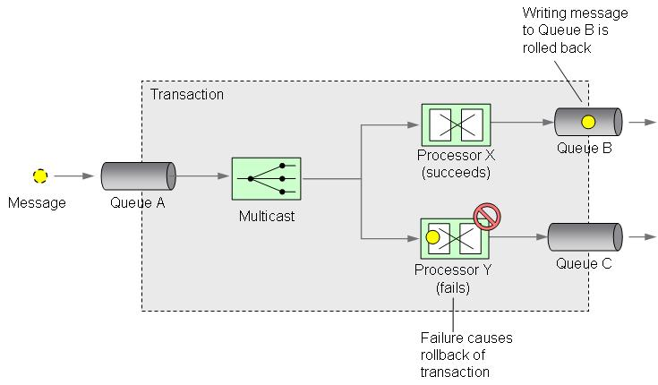
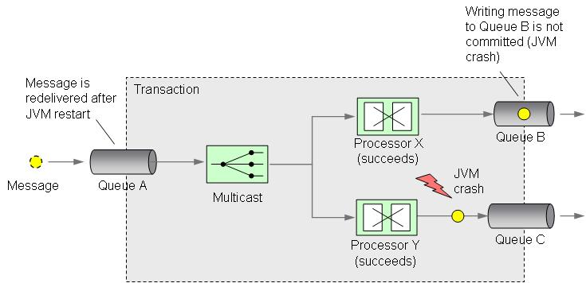

Recoverability
Recoverability means that a system can recover from crashes or service failures without losing messages or data. By means of JMS transactional message queues, IPF applications can be se up providing failure recovery mechanisms.
Transactional messaging means reading a message from a source queue, processing the messages and writing the result message(s) to one or more target queues within a single system transaction. Depending on the message broker and transaction manager in use the configuration options can vary significantly. Here we focus on ActiveMQ as message broker and Spring’s JMS transaction manager for managing local transactions.
For possible alternatives such as XA transactions and advanced configuration options refer to the Apache Camel documentation.
The following subsections describe different use cases for transactional messaging.
Recover from processor failures
Let’s start with an example. We read a message from queue A and send a copy of it to processor X and processor Y. After processor X and Y finished their work they send the processing result to queue B and C, respectivly. We only want the processed messages to be sent to queues B and C if both processors X and Y succeed. If processor X succeeds and writes the message to queue B but process Y fails we want to undo the writing to queue B.
To achieve this we have to define a transaction boundary in which queues A, B and C participate. Failure of process Y causes the transaction to be rolled back and so the writing to queue B. Usually, for every messages we read from queue A we start a new transaction.

If it can be expected that a re-delivery of the original message will lead to the same processing error then the original message should be sent to a dead letter queue (DLQ) immediately. Otherwise, the messaging system should be configured to redeliver the message after a rollback.
Recover from JVM crashes
Another category of failures we have to look at are JVM crashes. After re-starting a crashed JVM we want all messages whose transactions have not been committed to be re-delivered and we also want to avoid message duplication. Imagine that processors X and Y both successfully processed the message and one message has already been written to queue B but before the other message is written to queue C the JVM crashes. After a JVM re-start we want the original message to be re-consumed from queue A but we do not want the message that has previously been written to queue B to be consumed from there if the overall processing (i.e. processor X and Y and writing to queues B and C) did not successfully complete. Otherwise, we’d create a message duplicate if the re-consumed message from queue A is processed again and written to queue B (a second time).
We can avoid this by defining a transaction boundary as shown in the following figure. Additionally, the queues need to persist their messages in order to survive JVM crashes.

Recover from failed deliveries
Remote communication with external systems may fail for several reasons. Examples are transport failures or temporary downtimes. In these cases a re-delivery of a message may succeed. One option to configure message redelivery is via transactional queues.
As shown in the next figure, if the message delivery to a web application fails, the HTTP endpoint generates an exception that causes the current transaction to be rolled back. The queueing system can be configured to redeliver messages (with a configurable delay) after a transaction has been rolled back.

Distributed transaction processing
For distributed transaction processing you’ll need an XA transaction manager and resources that support the X/Open CAE Specification (the XA protocol). Many database management systems and message brokers support XA. Distributed transaction processing coordinates two or more resource managers in a global XA transaction. For example, if you want to read a message from one queue, write it to another queue and update a row in a relational database inside a single system transaction then you’ll need XA if the database and the JMS queues are managed by different resource managers.
The best way to use XA with IPF is to use transactional resources provided by JEE application servers.
Configuration
This section explains how to configure Camel, ActiveMQ and your message processing route to
- recover from processor failures
- recover from JVM crashes and
- recover from failed deliveries
A running examples can be found in the JUnit test org.openehealth.ipf.platform.camel.core.camel.transaction.TransactionalMessagingTest of the ipf-platform-camel-core component. The route configuration in the JUnit test is well documented. Here’s a summary of the most important aspects.
We start by configuring two JMS components. We define one for internal message processing (amqProcess with a redelivery count of 0) and another one for message delivery to destinations (amqDelivery with a redelivery count of 1). That’s a bit redundant but that’s needed because the redelivery policy is bound to an ActiveMQConnectionFactory and the Camel JMS component cannot manage more than one connection factory. However, we configure only a single message broker. JMS destinations created by one JMS component can be used by the other JMS component.
Alternatively, you may also configure redeliveries in your routes but this is discouraged when doing transactional messaging.
In the next listing you see the configuration of the JMS component (amqProcess) we use for internal, transactional message processing. Here, we define a redelivery policy saying that we want to turn off redeliveries (maximumRedeliveries=0). In other words, if there is an internal processing error we don’t want ActiveMQ to redeliver the message. In the amqConfigProcess bean we set the a local JMS transaction manager which is provided by the Spring framework. To turn on transactional messaging we additionally have to set the transacted property to true. We also use a SingleConnectionFactory for caching a single connection created by ActiveMQConnectionFactory. This dramatically improves performance.
<beans xmlns="http://www.springframework.org/schema/beans"
xmlns:xsi="http://www.w3.org/2001/XMLSchema-instance"
xsi:schemaLocation="
http://www.springframework.org/schema/beans
http://www.springframework.org/schema/beans/spring-beans.xsd"
>
<!-- ================================================================== -->
<!-- Transaction Management -->
<!-- ================================================================== -->
<bean id="jmsTransactionManagerProcess" class="org.springframework.jms.connection.JmsTransactionManager">
<property name="connectionFactory" ref="jmsCachingConnectionFactoryProcess"/>
</bean>
<!-- ================================================================== -->
<!-- ActiveMQ Setup -->
<!-- ================================================================== -->
<bean id="amqConfigProcess" class="org.apache.camel.component.jms.JmsConfiguration">
<property name="connectionFactory" ref="jmsCachingConnectionFactoryProcess"/>
<property name="transactionManager" ref="jmsTransactionManagerProcess"/>
<property name="concurrentConsumers" value="3"/>
<property name="maxConcurrentConsumers" value="5"/>
<property name="transacted" value="true"/>
</bean>
<bean id="amqProcess" class="org.apache.camel.component.jms.JmsComponent">
<property name="configuration" ref="amqConfigProcess"/>
</bean>
<bean id="jmsCachingConnectionFactoryProcess"
class="org.springframework.jms.connection.SingleConnectionFactory">
<property name="targetConnectionFactory" ref="jmsConnectionFactoryProcess"/>
</bean>
<bean id="jmsConnectionFactoryProcess" class="org.apache.activemq.ActiveMQConnectionFactory">
<property name="brokerURL" value="tcp://localhost:60001"/>
<property name="redeliveryPolicy" ref="redeliveryPolicyProcess" />
</bean>
<bean id="redeliveryPolicyProcess" class="org.apache.activemq.RedeliveryPolicy">
<property name="maximumRedeliveries" value="0" />
</bean>
</beans>
In the next listing you see the configuration of the JMS component (amqDelivery) we use for message delivery to destinations. This configuration is equivalent to the above except that the maximum redelivery count is set to 1.
<beans xmlns="http://www.springframework.org/schema/beans"
xmlns:xsi="http://www.w3.org/2001/XMLSchema-instance"
xsi:schemaLocation="
http://www.springframework.org/schema/beans
http://www.springframework.org/schema/beans/spring-beans.xsd"
>
<!-- ================================================================== -->
<!-- Transaction Management -->
<!-- ================================================================== -->
<bean id="jmsTransactionManagerDelivery"
class="org.springframework.jms.connection.JmsTransactionManager">
<property name="connectionFactory" ref="jmsCachingConnectionFactoryDelivery"/>
</bean>
<!-- ================================================================== -->
<!-- ActiveMQ Setup -->
<!-- ================================================================== -->
<bean id="amqConfigDelivery" class="org.apache.camel.component.jms.JmsConfiguration">
<property name="connectionFactory" ref="jmsCachingConnectionFactoryDelivery"/>
<property name="transactionManager" ref="jmsTransactionManagerDelivery"/>
<property name="concurrentConsumers" value="3"/>
<property name="maxConcurrentConsumers" value="5"/>
<property name="transacted" value="true"/>
</bean>
<bean id="amqDelivery" class="org.apache.camel.component.jms.JmsComponent">
<property name="configuration" ref="amqConfigDelivery"/>
</bean>
<bean id="jmsCachingConnectionFactoryDelivery"
class="org.springframework.jms.connection.SingleConnectionFactory">
<property name="targetConnectionFactory" ref="jmsConnectionFactoryDelivery"/>
</bean>
<bean id="jmsConnectionFactoryDelivery" class="org.apache.activemq.ActiveMQConnectionFactory">
<property name="brokerURL" value="tcp://localhost:60001"/>
<property name="redeliveryPolicy" ref="redeliveryPolicyDelivery" />
</bean>
<bean id="redeliveryPolicyDelivery" class="org.apache.activemq.RedeliveryPolicy">
<property name="maximumRedeliveries" value="1" />
</bean>
</beans>
Finally, we configure the message broker and the route builder that contains the definition of the transactional messaging route. In our example, we use the route builder that is also used in the org.openehealth.ipf.platform.camel.core.camel.transaction.TransactionalMessagingTest of the ipf-platform-camel-core component.
<beans xmlns="http://www.springframework.org/schema/beans"
xmlns:xsi="http://www.w3.org/2001/XMLSchema-instance"
xmlns:amq="http://activemq.apache.org/schema/core"
xsi:schemaLocation="
http://www.springframework.org/schema/beans
http://www.springframework.org/schema/beans/spring-beans.xsd
http://activemq.apache.org/schema/core
http://activemq.apache.org/schema/core/activemq-core.xsd">
<!-- ================================================================== -->
<!-- ActiveMQ Broker Setup -->
<!-- ================================================================== -->
<amq:broker useJmx="false" persistent="true" brokerName="localhost" useShutdownHook="true">
<amq:transportConnectors>
<amq:transportConnector uri="tcp://localhost:60001"/>
</amq:transportConnectors>
<amq:persistenceAdapter>
<amq:amqPersistenceAdapter cleanupInterval="2000"/>
</amq:persistenceAdapter>
</amq:broker>
</beans>
<beans xmlns="http://www.springframework.org/schema/beans"
xmlns:xsi="http://www.w3.org/2001/XMLSchema-instance"
xmlns:camel="http://camel.apache.org/schema/spring"
xsi:schemaLocation="
http://www.springframework.org/schema/beans
http://www.springframework.org/schema/beans/spring-beans-2.5.xsd
http://camel.apache.org/schema/spring
>
<!-- ================================================================== -->
<!-- Camel and RouteBuilder Setup -->
<!-- ================================================================== -->
<camel:camelContext id="camelContext">
<camel:routeBuilder ref="routeBuilder"/>
</camel:camelContext>
<bean id="routeBuilder"
class="org.openehealth.ipf.platform.camel.core.camel.transaction.TransactionalMessagingRouteBuilder">
</bean>
<!-- ================================================================== -->
<!-- Broker Factory Bean -->
<!-- ================================================================== -->
<bean id="broker" class="org.apache.activemq.xbean.BrokerFactoryBean">
<property name="config" value="/context-activemq.xml"/>
</bean>
</beans>
Transactional Routes
To define a transactional message processing route for internal message processing you refer to JMS destinations via the amqProcess component.
...
// read message from queue:input via amqProcess JMS component (starts new transaction)
from("amqProcess:queue:input")
// do whatever message processing is needed (transaction is rolled back on failure)
...
// write processed message to queue:output via amqProcess JMS component (commit transaction)
.to("amqProcess:queue:output");
...
You may also define several output queues e.g. when using multicast. In this case, writing the messages to all destination queues must be successful otherwise the transaction is rolled back and none of the output queues will make their message available to consumers. For details refer to the org.openehealth.ipf.platform.camel.core.camel.transaction.TransactionalMessagingTest of the ipf-platform-camel-core component.
To define transactional message delivery to an HTTP endpoint you refer to the JMS destination that the message is read from via the amqDelivery component. Whenever there is a delivery failure the HTTP endpoint will throw an exception. This exception will cause the current transaction to be rolled back. After rollback the message is redelivered once.
...
// read message from queue:input via amqDelivery JMS component (starts new transaction)
from("amqDelivery:queue:output")
// send message to HTTP service. The transaction will be committed of successful otherwise
// rolled back and redelivered once by queue:output.
.to("http://somehost:8080/somepath");
...
For details how the Camel HTTP component reacts on different status codes refer to the documentation of the HTTP component. Please note that the destination system does not participate in the transaction that has been started by the transactional queue.
If you want the destination system to participate in the transaction you’ll have to use a distributed transaction manager and a protocol capable of passing the transaction context that both communication partners understand.